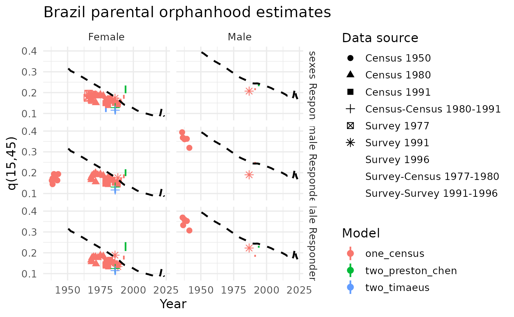

Orphanhood.RmdOrphanhood information is commonly collected in censuses and surveys through questions such as whether a person’s biological mother or father is still alive. Questions about mothers are more frequent than questions about fathers. In censuses, they are usually asked across all age groups, whereas surveys such as the DHS often restrict them to the youngest age groups. These data have been widely used in countries with incomplete vital statistics. IPUMS standardized orphanhood variables and made harmonized modules and questionnaire images available (IPUMS 2026), while the DHS program provides access to survey data and documentation.
The underlying demographic logic is that the parental survival status reported by children contains information on adult mortality. If all mothers gave birth at age 25, a respondent aged (n) would provide direct information on (). In reality, fertility is distributed across ages, so the age pattern of childbearing must be taken into account. Timæus (1992) therefore modeled adult survival using the proportion of respondents with a surviving mother or father, ({}5S{n-5}), together with the mean age of childbearing.
For women, the method estimates survival for (n) years from age 25 using
where the coefficients vary by five-year respondent age group. For fathers, the corresponding equation begins at age 35 and uses a different set of coefficients. The coefficients were derived from simulated combinations of Brass relational mortality models and Booth’s relational Gompertz fertility model (Booth 1984). Thus, the method can be applied under a range of mortality and fertility regimes rather than under a single fixed demographic pattern.
For example, if 80% of women aged 20–24 report that their mother is still alive and the mean age of childbearing is 27, the coefficients for ages 25–29 can be used to obtain
This implies a probability of dying over the previous 25 years of approximately 20%, under the assumption that fertility and mortality remained constant over that period. The coefficient attached to mean age of childbearing is positive because, for a given proportion with a surviving parent, later childbearing implies that parents are younger and therefore more likely to be alive (Preston et al. 2001).
The method also locates each estimate at a specific reference date rather than automatically assigning it to the midpoint of the exposure interval. The resulting time lag depends on respondent age, the fertility pattern, and the age schedule of mortality. Older respondents provide information on older parents who have been exposed to mortality risks for longer periods. Since each respondent age group yields a separate estimate of ({}np{25}), inconsistencies may arise across ages. Each estimate should therefore be mapped onto a standard mortality pattern, evaluated, and retained only when it provides demographically plausible information (United Nations Population Division 1983).
The main limitations include the adoption effect (Timæus 1991), age misreporting, uncertainty about parental identity or survival status, and the greater weight assigned to high-fertility adults because they have more children available to respond. HIV/AIDS can also cause underestimation because infected women tend to have lower fertility and infected children may die before the survey; Timæus and Nunn (1997) proposed a correction based on HIV prevalence, reduced fertility, and vertical transmission. When two observations are available, cohort changes in orphanhood can be used to estimate parental survival more directly. For example,
These two-survey approaches use variable-(r) adjustments, usually
refer estimates to the midpoint between observations, and retain
cohort-specific estimates separately in order to assess statistical
uncertainty (Timæus 1991; Preston et al. 2001;
Moultrie et al. 2013; Preston and Chen 1984). Although we do not
apply it here, you can find an adaptation of the Macura (1984) method in
the orphanhood_macura function.
Data that we need (both loaded with the package) are
Orphanhood_DB_full: census and survey information about
survival parents by age and sex of respondants.
head(Orphanhood_DB)
#> IndicatorName
#> <char>
#> 1: Proportion of the population with mother alive by age and sex - abridged
#> 2: Proportion of the population with mother alive by age and sex - abridged
#> 3: Proportion of the population with mother alive by age and sex - abridged
#> 4: Proportion of the population with mother alive by age and sex - abridged
#> 5: Proportion of the population with mother alive by age and sex - abridged
#> 6: Proportion of the population with mother alive by age and sex - abridged
#> IndicatorID LocName LocID StructuredDataID LocTypeName LocTypeID RegName
#> <num> <char> <num> <num> <char> <num> <num>
#> 1: 101 Afghanistan 4 382635629 Country 5 NA
#> 2: 101 Afghanistan 4 382635630 Country 5 NA
#> 3: 101 Afghanistan 4 382635631 Country 5 NA
#> 4: 101 Afghanistan 4 382635632 Country 5 NA
#> 5: 101 Afghanistan 4 382635633 Country 5 NA
#> 6: 101 Afghanistan 4 382635634 Country 5 NA
#> RegID AreaName AreaID LocAreaTypeName LocAreaTypeID
#> <num> <num> <num> <char> <num>
#> 1: 0 NA 0 Whole area 2
#> 2: 0 NA 0 Whole area 2
#> 3: 0 NA 0 Whole area 2
#> 4: 0 NA 0 Whole area 2
#> 5: 0 NA 0 Whole area 2
#> 6: 0 NA 0 Whole area 2
#> SubGroupTypeName SubGroupTypeID SubGroupID1
#> <char> <num> <num>
#> 1: Total / All groups / Whole group 2 2
#> 2: Total / All groups / Whole group 2 2
#> 3: Total / All groups / Whole group 2 2
#> 4: Total / All groups / Whole group 2 2
#> 5: Total / All groups / Whole group 2 2
#> 6: Total / All groups / Whole group 2 2
#> SubGroupName SubGroupCombinationID SubGroupTypeSortOrder
#> <char> <num> <num>
#> 1: Total or All groups 0 3
#> 2: Total or All groups 0 3
#> 3: Total or All groups 0 3
#> 4: Total or All groups 0 3
#> 5: Total or All groups 0 3
#> 6: Total or All groups 0 3
#> IndicatorShortName DataCatalogID DataProcessTypeID DataProcessType
#> <char> <num> <char> <char>
#> 1: pMotherAlive 5045 Survey Survey
#> 2: pMotherAlive 5045 Survey Survey
#> 3: pMotherAlive 5045 Survey Survey
#> 4: pMotherAlive 5045 Survey Survey
#> 5: pMotherAlive 5045 Survey Survey
#> 6: pMotherAlive 5045 Survey Survey
#> DataProcessTypeSort DataProcess DataProcessID DataProcessSort
#> <num> <char> <num> <num>
#> 1: 3 DHS-NS 48 16
#> 2: 3 DHS-NS 48 16
#> 3: 3 DHS-NS 48 16
#> 4: 3 DHS-NS 48 16
#> 5: 3 DHS-NS 48 16
#> 6: 3 DHS-NS 48 16
#> DataCatalogName DataCatalogShortName ReferencePeriod
#> <char> <char> <char>
#> 1: Afghanistan 2010 Mortality Survey 2010 DHS Special 2010
#> 2: Afghanistan 2010 Mortality Survey 2010 DHS Special 2010
#> 3: Afghanistan 2010 Mortality Survey 2010 DHS Special 2010
#> 4: Afghanistan 2010 Mortality Survey 2010 DHS Special 2010
#> 5: Afghanistan 2010 Mortality Survey 2010 DHS Special 2010
#> 6: Afghanistan 2010 Mortality Survey 2010 DHS Special 2010
#> ReferenceYearStart ReferenceYearEnd ReferenceYearMid FieldWorkStart
#> <num> <num> <num> <char>
#> 1: 2010 2010 2010.5 4/1/2010 12:00:00 AM
#> 2: 2010 2010 2010.5 4/1/2010 12:00:00 AM
#> 3: 2010 2010 2010.5 4/1/2010 12:00:00 AM
#> 4: 2010 2010 2010.5 4/1/2010 12:00:00 AM
#> 5: 2010 2010 2010.5 4/1/2010 12:00:00 AM
#> 6: 2010 2010 2010.5 4/1/2010 12:00:00 AM
#> FieldWorkEnd FieldWorkMiddle DataCatalogNote DataSourceID
#> <char> <num> <char> <num>
#> 1: 12/31/2010 12:00:00 AM 2010.62 44606
#> 2: 12/31/2010 12:00:00 AM 2010.62 44606
#> 3: 12/31/2010 12:00:00 AM 2010.62 44606
#> 4: 12/31/2010 12:00:00 AM 2010.62 44606
#> 5: 12/31/2010 12:00:00 AM 2010.62 44606
#> 6: 12/31/2010 12:00:00 AM 2010.62 44606
#> DataSourceAuthor
#> <char>
#> 1: Afghan Public Health Institute, Central Statistics Organization , ICF Macro , Indian Institute of Health Management Research , World Health Organization/EMRO
#> 2: Afghan Public Health Institute, Central Statistics Organization , ICF Macro , Indian Institute of Health Management Research , World Health Organization/EMRO
#> 3: Afghan Public Health Institute, Central Statistics Organization , ICF Macro , Indian Institute of Health Management Research , World Health Organization/EMRO
#> 4: Afghan Public Health Institute, Central Statistics Organization , ICF Macro , Indian Institute of Health Management Research , World Health Organization/EMRO
#> 5: Afghan Public Health Institute, Central Statistics Organization , ICF Macro , Indian Institute of Health Management Research , World Health Organization/EMRO
#> 6: Afghan Public Health Institute, Central Statistics Organization , ICF Macro , Indian Institute of Health Management Research , World Health Organization/EMRO
#> DataSourceYear DataSourceName
#> <num> <char>
#> 1: 2010 Afghanistan Mortality Survey 2010
#> 2: 2010 Afghanistan Mortality Survey 2010
#> 3: 2010 Afghanistan Mortality Survey 2010
#> 4: 2010 Afghanistan Mortality Survey 2010
#> 5: 2010 Afghanistan Mortality Survey 2010
#> 6: 2010 Afghanistan Mortality Survey 2010
#> DataSourceShortName DataSourceSort DataStatusName DataStatusID
#> <char> <num> <char> <num>
#> 1: Afghanistan Mortality Survey 2010 0 Final 1
#> 2: Afghanistan Mortality Survey 2010 0 Final 1
#> 3: Afghanistan Mortality Survey 2010 0 Final 1
#> 4: Afghanistan Mortality Survey 2010 0 Final 1
#> 5: Afghanistan Mortality Survey 2010 0 Final 1
#> 6: Afghanistan Mortality Survey 2010 0 Final 1
#> DataStatusSort StatisticalConceptName StatisticalConceptID
#> <num> <char> <num>
#> 1: 2 De-facto 2
#> 2: 2 De-facto 2
#> 3: 2 De-facto 2
#> 4: 2 De-facto 2
#> 5: 2 De-facto 2
#> 6: 2 De-facto 2
#> StatisticalConceptSort SexName SexID SexSort AgeID AgeUnit AgeStart
#> <num> <char> <num> <num> <num> <char> <num>
#> 1: 1 Both sexes 3 3 702 Year 5
#> 2: 1 Both sexes 3 3 703 Year 10
#> 3: 1 Both sexes 3 3 704 Year 15
#> 4: 1 Both sexes 3 3 705 Year 20
#> 5: 1 Both sexes 3 3 706 Year 25
#> 6: 1 Both sexes 3 3 707 Year 30
#> AgeEnd AgeSpan AgeMid AgeLabel AgeSort agesort DataTypeGroupName
#> <num> <num> <num> <char> <num> <num> <char>
#> 1: 10 5 7.5 5-9 69 0 Direct
#> 2: 15 5 12.5 10-14 133 0 Direct
#> 3: 20 5 17.5 15-19 190 0 Direct
#> 4: 25 5 22.5 20-24 263 0 Direct
#> 5: 30 5 27.5 25-29 306 0 Direct
#> 6: 35 5 32.5 30-34 330 0 Direct
#> DataTypeGroupID DataTypeName DataTypeID DataTypeSort ModelType
#> <num> <char> <num> <num> <char>
#> 1: 3 Direct 16 11 Not applicable
#> 2: 3 Direct 16 11 Not applicable
#> 3: 3 Direct 16 11 Not applicable
#> 4: 3 Direct 16 11 Not applicable
#> 5: 3 Direct 16 11 Not applicable
#> 6: 3 Direct 16 11 Not applicable
#> ModelPatternFamilyName ModelPatternFamilyID ModelPatternName
#> <char> <num> <char>
#> 1: Not applicable 15 Not applicable (Direct)
#> 2: Not applicable 15 Not applicable (Direct)
#> 3: Not applicable 15 Not applicable (Direct)
#> 4: Not applicable 15 Not applicable (Direct)
#> 5: Not applicable 15 Not applicable (Direct)
#> 6: Not applicable 15 Not applicable (Direct)
#> ModelPatternID DataReliabilityName DataReliabilityID DataReliabilitySort
#> <num> <char> <num> <num>
#> 1: 40 Fair 5 2
#> 2: 40 Fair 5 2
#> 3: 40 Fair 5 2
#> 4: 40 Fair 5 2
#> 5: 40 Fair 5 2
#> 6: 40 Fair 5 2
#> PeriodTypeName PeriodTypeID PeriodGroupName PeriodGroupID PeriodStart
#> <char> <num> <char> <num> <num>
#> 1: RP 6 0 433 0
#> 2: RP 6 0 433 0
#> 3: RP 6 0 433 0
#> 4: RP 6 0 433 0
#> 5: RP 6 0 433 0
#> 6: RP 6 0 433 0
#> PeriodEnd PeriodSpan PeriodMiddle Weight TimeUnit TimeStart TimeEnd
#> <num> <num> <num> <num> <char> <char> <char>
#> 1: 0 0 0 NA year 15/08/2010 15/08/2010
#> 2: 0 0 0 NA year 15/08/2010 15/08/2010
#> 3: 0 0 0 NA year 15/08/2010 15/08/2010
#> 4: 0 0 0 NA year 15/08/2010 15/08/2010
#> 5: 0 0 0 NA year 15/08/2010 15/08/2010
#> 6: 0 0 0 NA year 15/08/2010 15/08/2010
#> TimeDuration TimeMid TimeLabel FootNoteID id SeriesID DataValue
#> <num> <num> <char> <num> <num> <char> <num>
#> 1: 0 2010.619 2010 0 1 1041324512495107 0.9867798
#> 2: 0 2010.619 2010 0 1 1041324512495107 0.9712740
#> 3: 0 2010.619 2010 0 1 1041324512495107 0.9490994
#> 4: 0 2010.619 2010 0 1 1041324512495107 0.9216962
#> 5: 0 2010.619 2010 0 1 1041324512495107 0.8639209
#> 6: 0 2010.619 2010 0 1 1041324512495107 0.7899554mac_wpp22: mean age of childbearing from an external
source, in this case from WPP 2022 revision. Consider here that onet
hing is the mean age at risk of childearing (calculated from asfr) and
other thing is the population weighted, taht only considers observed
mothers and fathers. In general those looks similar in value.
head(mac_wpp22)
#> # A tibble: 6 × 4
#> LocID Year parent mac
#> <int> <int> <chr> <dbl>
#> 1 4 1950 mother 29.6
#> 2 4 1950 father 36.6
#> 3 4 1951 mother 29.6
#> 4 4 1951 father 36.6
#> 5 4 1952 mother 29.6
#> 6 4 1952 father 36.6We join both data sources in one just for convenience, and select
only relevant variables, avoiding duplicate survey rows. Our main type
of indicator is “Proportion of the population with mother
alive” and “Proportion of the population with father alive”
(are filtered by ID in DemoData format), mening proportion
not orphaned.
library(dplyr)
#>
#> Attaching package: 'dplyr'
#> The following objects are masked from 'package:stats':
#>
#> filter, lag
#> The following objects are masked from 'package:base':
#>
#> intersect, setdiff, setequal, union
library(tidyr)
library(stringr)
library(ggplot2)
orp_data <- Orphanhood_DB |>
filter(
LocName == "Brazil",
LocAreaTypeID == 2,
AgeLabel != "Total",
IndicatorID %in% c(101, 102),
AgeEnd >= 0,
DataValue > 0) |>
mutate(
parent = if_else(str_detect(IndicatorName, "mother"), "mother", "father"),
Year = trunc(TimeMid),
age = AgeStart,
sex_resp = SexName,
prop_not_orphan = DataValue
) |>
select(LocID, LocName, DataSourceShortName, DataProcessType, IndicatorName,
TimeLabel, TimeMid, Year, sex_resp, parent, age, prop_not_orphan) |>
distinct() |>
left_join(mac_wpp22, by = c("LocID", "Year", "parent"))First we need to organize the one and pair-census comparison. FOr the
cas of two observations, there is a version of coefficients, one from
Ttimaeus and other from Perton & Chen. As in
intercensal_survvial, when mlt_family = NULL
all the eleven model life table families are considered as pattern (see
DemoToolsData::modelLTx1).
one_grid <- orp_data |>
count(TimeMid, parent, sex_resp, name = "n_age")
two_grid <- one_grid |>
arrange(parent, sex_resp, TimeMid) |>
group_by(parent, sex_resp) |>
mutate(date2 = lead(TimeMid)) |>
transmute(date1 = TimeMid, date2, sex_resp) |>
filter(!is.na(date2), trunc(date1) != trunc(date2), date2 - date1 < 30) |>
crossing(variant = c("two_timaeus", "two_preston_chen"))We loop over the combinations of
sex/one-two/interval/coefficients/mlt with pmap from the
map family functions. If you want to see in detail the
application to some census pair (not looping in an industrial scale as
here) see the orphanhood documentation.
library(purrr)
# one observation method
one_runs <- pmap(one_grid, \(TimeMid, parent, sex_resp, n_age) {
tryCatch({
x <- orp_data |>
filter(parent == .env$parent, TimeMid == .env$TimeMid, sex_resp == .env$sex_resp) |>
arrange(age)
out <- orphanhood_one(
prop_not_orphan = x$prop_not_orphan,
age = x$age,
maternal = (parent == "mother"),
mac = x$mac[1],
date = x$TimeMid[1],
mlt_family = NULL,
verbose = FALSE
)
list(
result = out$adult_mort_index |>
mutate(
variant = "one_census",
source = x$DataProcessType[1],
Year = x$TimeLabel[1],
date1 = x$TimeMid[1],
date2 = x$TimeMid[1],
parent = parent,
sex_resp = sex_resp,
.before = 1
),
error = NA_character_
)
}, error = \(e) list(result = NULL, error = conditionMessage(e)))
})
# two observations method
two_runs <- pmap(two_grid, \(parent, date1, date2, sex_resp, variant) {
tryCatch({
x <- orp_data |>
filter(TimeMid %in% c(date1, date2), sex_resp == .env$sex_resp, parent == .env$parent) |>
arrange(TimeMid, age)
args <- list(
prop1_not_orphan = x$prop_not_orphan[x$TimeMid == date1],
prop2_not_orphan = x$prop_not_orphan[x$TimeMid == date2],
age1 = x$age[x$TimeMid == date1],
age2 = x$age[x$TimeMid == date2],
date1 = date1,
date2 = date2,
maternal = (parent == "mother"),
mac1 = x$mac[x$TimeMid == date1][1],
mac2 = x$mac[x$TimeMid == date2][1],
mlt_family = NULL,
verbose = FALSE
)
if (variant == "two_preston_chen") args$method <- "preston_chen"
out <- do.call(orphanhood_two, args)
list(
result = out$adult_mort_index |>
mutate(
source = paste0(x$DataProcessType[x$TimeMid == date1][1], "-",
x$DataProcessType[x$TimeMid == date2][1]),
Year = paste0(x$TimeLabel[x$TimeMid == date1][1], "-",
x$TimeLabel[x$TimeMid == date2][1]),
variant = variant,
date1 = date1,
date2 = date2,
parent = parent,
sex_resp = sex_resp,
time_location = (date1 + date2) / 2,
.before = 1
),
error = NA_character_
)
}, error = \(e) list(result = NULL, error = conditionMessage(e)))
})
#> Joining with `by = join_by(age_yplus_n)`
#> Joining with `by = join_by(age_yplus_n)`
#> Joining with `by = join_by(age_yplus_n)`
#> Joining with `by = join_by(age_yplus_n)`
# bind results from the two methods
results_df <- bind_rows(
map2_dfr(one_runs, seq_len(nrow(one_grid)), \(x, i) {
if (is.null(x$result)) return(NULL)
x$result |> mutate(run_id = paste0("one_", i), .before = 1)
}),
map2_dfr(two_runs, seq_len(nrow(two_grid)), \(x, i) {
if (is.null(x$result)) return(NULL)
x$result |> mutate(run_id = paste0("two_", i), .before = 1)
})
)First we can take a look to combinations that did not work, and if we see something we need to loof for the reason (can exists quality problems in census data, or some issue arrangin the data, etc.). In this case we see an error realted to the age requirements of the Timaeus coefficients in the two observation method.
issues_df <- bind_rows(
one_grid |> mutate(error = map_chr(one_runs, "error"), variant = "one_census"),
two_grid |> mutate(error = map_chr(two_runs, "error"))
) |>
filter(!is.na(error))
head(issues_df)
#> TimeMid parent sex_resp n_age
#> <num> <char> <char> <int>
#> 1: NA father Both sexes NA
#> 2: NA father Female NA
#> 3: NA father Male NA
#> 4: NA mother Both sexes NA
#> 5: NA mother Female NA
#> 6: NA mother Male NA
#> error
#> <char>
#> 1: For applying this method you need adult ages for respondants (IUSSP, 2012)
#> 2: For applying this method you need adult ages for respondants (IUSSP, 2012)
#> 3: For applying this method you need adult ages for respondants (IUSSP, 2012)
#> 4: For applying this method you need adult ages for respondants (IUSSP, 2012)
#> 5: For applying this method you need adult ages for respondants (IUSSP, 2012)
#> 6: For applying this method you need adult ages for respondants (IUSSP, 2012)
#> variant date1 date2
#> <char> <num> <num>
#> 1: two_timaeus 1991.791 1996.331
#> 2: two_timaeus 1991.791 1996.331
#> 3: two_timaeus 1991.791 1996.331
#> 4: two_timaeus 1991.791 1996.331
#> 5: two_timaeus 1991.791 1996.331
#> 6: two_timaeus 1991.791 1996.331There are many ways to get summary information from the results. We choose here to get min/max and inter-quartil percentiles for each sex, method and census-pair.
dispersion_df <- results_df %>%
mutate(name = ifelse(variant == "one_census",
paste0(source, " ", Year),
paste0(source, " ", trunc(date1), "-", trunc(date2))),
time_point = round(time_location, 2)) |>
summarise(
q15_45_min = min(q15_45, na.rm = TRUE),
q15_45_p25 = quantile(q15_45, 0.25, na.rm = TRUE),
q15_45_med = median(q15_45, na.rm = TRUE),
q15_45_p75 = quantile(q15_45, 0.75, na.rm = TRUE),
q15_45_max = max(q15_45, na.rm = TRUE),
.by = c(parent, sex_resp, source, variant, name, time_point)
)We plot the results agaist WPP24 results (which in some way already is considering the estimates).
The various data sources available for Brazil make it possible to apply the different methods discussed above, distinguishing both the sex of the parent and the sex of the respondent. As expected, fewer observations are available for fathers, a common limitation noted previously. Estimates based on the 1950 Census appear to underestimate the mortality level by around 50% and yield values similar to those observed several decades later; these estimates should therefore probably be discarded. Estimates based on a single observation show, for women, a declining trend and a slightly lower mortality level than WPP 2024 (United Nations, Department of Economic and Social Affairs, Population Division 2024), with a larger bias when the respondents are men. Estimates based on two observations do not appear to improve performance for women. For men, however, they seem to provide one potentially useful estimate based on the 1991–1996 surveys.
wpp_q15_45_df <- lt5_wpp24_brazil |>
filter(Sex %in% c("Female", "Male")) |>
summarise(q15_45_wpp = 1 - lx[AgeGrpStart == 60] / lx[AgeGrpStart == 15],
.by = c(Sex, Time))
ggplot(
dispersion_df |>
mutate(Sex = ifelse(parent == "mother", "Female", "Male"),
sex_resp = paste0(sex_resp, " Respondent")),
aes(time_point, q15_45_med, color = variant)
) +
geom_linerange(aes(ymin = q15_45_p25, ymax = q15_45_p75), linewidth = 0.8) +
geom_point(size = 2.5, aes(shape = name)) +
geom_line(
data = wpp_q15_45_df |> mutate(time_point = Time + .5),
aes(x = time_point, y = q15_45_wpp),
color = "black",
linewidth = 0.9,
linetype = "dashed"
) +
facet_grid(cols = vars(Sex), rows = vars(sex_resp)) +
labs(
col = "Model",
x = "Year",
y = "q(15,45)",
shape = "Data source",
title = "Brazil parental orphanhood estimates"
) +
theme_minimal(base_size = 13)
#> Warning: The shape palette can deal with a maximum of 6 discrete values because more
#> than 6 becomes difficult to discriminate
#> ℹ you have requested 9 values. Consider specifying shapes manually if you need
#> that many of them.
#> Warning: Removed 17 rows containing missing values or values outside the scale range
#> (`geom_point()`).